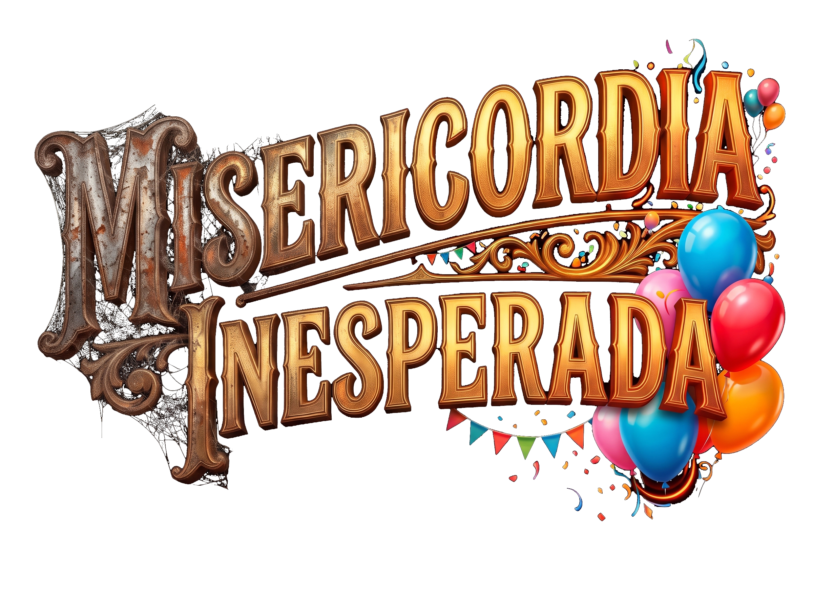

MISERICORDIA INESPERADA
Circo Valentía • Temporada Teatral

«Donde la voluntad desafía a la desdicha bajo la cuerda floja del Circo Valentía»
Una cautivadora experiencia de drama psicológico y realismo mágico con cantantes e interpretes en este teatro-musical, poesía visual. Sumérgete en el viaje de Eddy, Bruno y Margarita: tres seres marginados que transforman la soledad en un conmovedor renacer humano.

Circo Valentía
Escrita por Arc Guimel • Dirigida por Iván López
Coreografías: Fredy Corado | Rey Balam & MilenioTres Producciones

Una obra donde el circo abandonado se transforma en el espejo de nuestras propias batallas interiores. Apta para jóvenes y adultos (+15 años).
La vida representada como una carpa donde solo es posible encender la luz a través de las transformaciones de la conciencia.
El viejo malabarista lisiado tras un accidente que le arrebató su sustento. Arrojado a la intemperie y al reciclaje callejero, encarna el eco de los talentos desterrados por la indiferencia.
Cuidador del circo y expayaso ataviado de negro y amarillo como las abejas. Acompañado de su inseparable peluche, el Señor Sísifo, libra la mayor batalla contra la soledad hasta encender la chispa del renacer.
Una mujer arrojada al desamparo cuando la demencia nubla su entorno familiar. En el Circo Valentía halla el refugio donde sus desvaríos dialogan con la inocencia y la ternura.
La sombra omnipresente que marca el peso de la muerte y la tensión entre los extremos del escenario.
Devuelven la armonía y melodía crucial en cada clímax, representando la inmortalidad del arte.
Confidente íntimo de Eddy, guardián mudo de los anhelos más limpios de la carpa.
Movimiento, destreza y ritmo en vivo que dan atmósfera viva a cada cambio de acto.
Selecciona tu función, elige la cantidad de boletos con descuento en combo y completa tu reserva de inmediato.
Tus boletos incluirán código QR intransferible.
Puertas abren 45 minutos antes de la función.
Un equipo multidisciplinario de artistas escénicos, músicos, malabaristas y productores reunidos para encender la carpa.
Texto original, dramaturgia y propuesta conceptual del Circo Valentía.
Construcción estética, visual y ritmo dramático en tablado.
Producción ejecutiva de campo, vinculación y dirección complementaria.
Diseño de movimiento de pista circense y acoplamiento de cantantes en vivo.
Creación indumentaria: del traje abeja de Eddy a la catrina y zancos.
En alianza con Nosbit Audio Studio para el diseño acústico inmersivo.
Ubicado en una de las zonas culturales más tradicionales de la Ciudad de Guatemala, a pocos pasos del emblemático Parque Isabel La Católica. El teatro cuenta con butacas confortables, acústica adecuada y servicio de parqueo cercano para una velada segura e inolvidable.
Admisión Q. 100 | Promoción Especial: 2 personas x Q. 150
Bajo la lona gastada y los ecos dormidos del abandonado Circo Valentía, la condición humana se despoja de artificios para mostrar su fibra más vulnerable y valiente. Así se presenta «Misericordia Inesperada», una ambiciosa puesta en escena escrita y dirigida por el dramaturgo guatemalteco Arc Guimel (Guillermo Arce), producida por Rey Balam Productora³, con el acompañamiento en gestión cultural y co-dirección artística de Gustavo Ostrich, y en co-producción ejecutiva con MilenioTres Producciones®.
La propuesta, enmarcada en el cruce sensible del drama psicológico y el realismo mágico, articula siete escenas distribuidas en dos actos que confrontan al espectador con realidades apremiantes: la salud mental, el abandono del adulto mayor, la desolación y el duelo, pero también con la inquebrantable pulsión del perdón y la empatía comunitaria.
En el corazón del relato habita Eddy (encarnado por el actor Diego Alejandro Sierra Garrido), un joven cuidador y expayaso que custodia los despojos del circo vistiendo un traje negro y amarillo, evocador de las abejas obreras que insisten en reconstruir su colmena aun entre ruinas. Eddy comparte su intemperie con dos almas heridas por el olvido: Bruno (interpretado por José Julio Barrutia Cañas), un veterano malabarista lisiado tras un accidente que lo arrojó a la mendicidad y el reciclaje; y Margarita (María Isabel Yela Sayle), una mujer empujada al desamparo familiar tras el diagnóstico de demencia.
«Bruno, Margarita y Eddy encarnan respectivamente la tragedia, la locura y el amor. El circo funciona como una metáfora de la existencia: aquello que aprendemos en el hogar lo proyectamos cotidianamente en la sociedad.» — Guillermo Arce (Arc Guimel), Autor y Director
Junto a la terna protagónica, la fantasía escénica cobra vida a través de presencias totémicas y líricas: el Señor Sísifo, un oso de peluche que se erige como confidente y guardián emocional; la imponente y sombría silueta del Espectro Ambrosía (el zanquero Erwin Ramón Molina Villatoro), cuya anatomía desmesurada acecha los límites entre la vida y la fatalidad; la voz luminosa de Valentina (Sofía Ponce), una catrina de tintes poéticos que canta a la esperanza, secundada por la gracia silenciosa del Mimo interpretado por Héctor Toledo; y las Ánimas circenses, encarnadas por los virtuosos malabaristas Fredy Leonardo Turcios («El Mascota») y Daniel Estuardo Morales Martínez.
Lejos de ser un drama estático, *Misericordia Inesperada* destaca por su riqueza multisensorial. La dirección artística y escénica de Iván López, la dirección coreográfico-musical de Fredy Corado Arévalo y el diseño sonoro a cargo de Nosbit Audio Studio construyen una experiencia inmersiva enriquecida con cantantes e interpretes en este teatro musical, poesía visual. Cada cambio de acto se ve realzado por el cuidado vestuario de Héctor Leal, que equilibra la estética circense clásica con acentos oníricos.
El nudo dramático culmina cuando la voluntad de proteger al prójimo interrumpe el ciclo de desesperanza: al defender a una familia en peligro, Eddy descubre que la redención no surge del aislamiento, sino de tender la mano al otro. *Misericordia Inesperada* no solo es una cita con el teatro de autor; es un recordatorio urgente de que, aun sobre la cuerda floja del destino, el triunfo del espíritu humano es inevitable cuando se ama la vida.